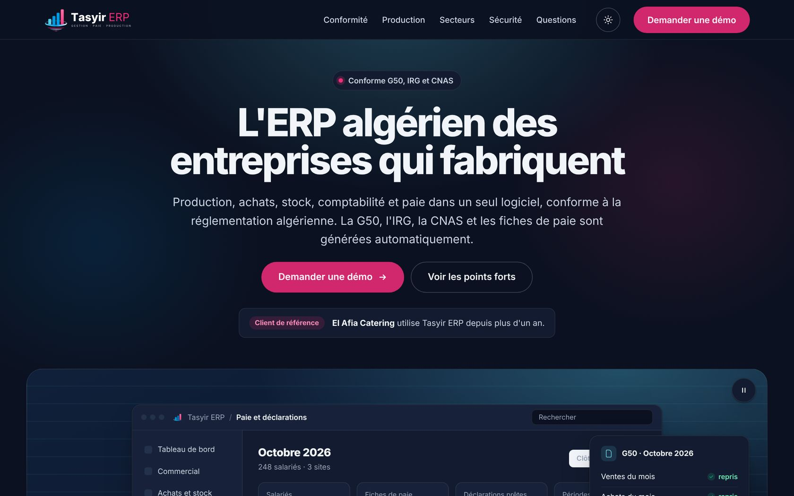

3 jours 1 h
Temps de déploiement sur AKS, après la mise en place de la chaîne Jenkins, Terraform et Kubernetes.

Ingénieur senior · Canal+
Je suis Mehdi Bouzidi. Depuis neuf ans, je construis des systèmes backend pour la Société Générale, la Banque de France et Canal+. Ma dernière chaîne CI/CD a fait passer les déploiements de trois jours à une heure.
Entreprises pour lesquelles j’ai développé
 Meritis
Meritis
01 / Résultats
3 jours 1 h
Temps de déploiement sur AKS, après la mise en place de la chaîne Jenkins, Terraform et Kubernetes.
3×
Des appels entre services plus rapides, en réduisant la latence et en repensant leurs échanges.
4×
Des requêtes SQL plus rapides sur PostgreSQL, grâce à l’indexation et au sharding des tables.
−60 %
Des rapports PDF plus légers, qui ont libéré l’essentiel du stockage qu’ils occupaient en base.
02 / Compétences
03 / Parcours
2026 – aujourd’hui
Canal+, Paris
2023 – 2026
Société Générale, Paris
Java 21, Azure, AKS, Kubernetes, Terraform, Jenkins, Grafana, Elasticsearch, JMeter, SQL
2021 – 2023
Banque de France, Paris
Java, REST, tests unitaires, AngularJS
2019 – 2021
Canal+, Paris
Java 8 et 11, Spring Boot, Apache Camel, AWS, PostgreSQL, React
2017 – 2019
ELIT, groupe Sonelgaz
Java 7 et 8, Java EE, JSF, PrimeFaces, PostgreSQL, Maven
2016 – 2017
Intellix Web
PHP, CakePHP, JavaScript, jQuery, MySQL, Google Maps API
2011 – 2016
USTHB, Alger
04 / Projets
Une plateforme e-learning IA pour les collaborateurs de Meritis. En tant que tech lead, j’ai conçu la chaîne multi-agents LLM qui rédige et vérifie les cours, et piloté 12 développeurs livrant deux à trois fonctionnalités par jour. Le MVP a été validé par la direction générale.
Microsoft SSO · SCORM · GitHub Actions · Azure

Un ERP algérien pour les entreprises qui fabriquent : production, achats, stock, comptabilité et paie dans un seul logiciel. La G50, l’IRG, la CNAS et les fiches de paie sont générées automatiquement. El Afia Catering l’utilise depuis plus d’un an.

Un annuaire public et gratuit des projets immobiliers neufs en Algérie : les promoteurs privés et leurs résidences sur une seule carte, en français et en arabe. Chaque information renvoie à sa source publique.

Le site d’un traiteur algérois qui prépare 5 000 repas par jour pour des cantines d’entreprise, des bases de vie, des buffets et des mariages. Il présente les prestations, les cuisines et la cheffe, et transforme les visites en demandes de devis.